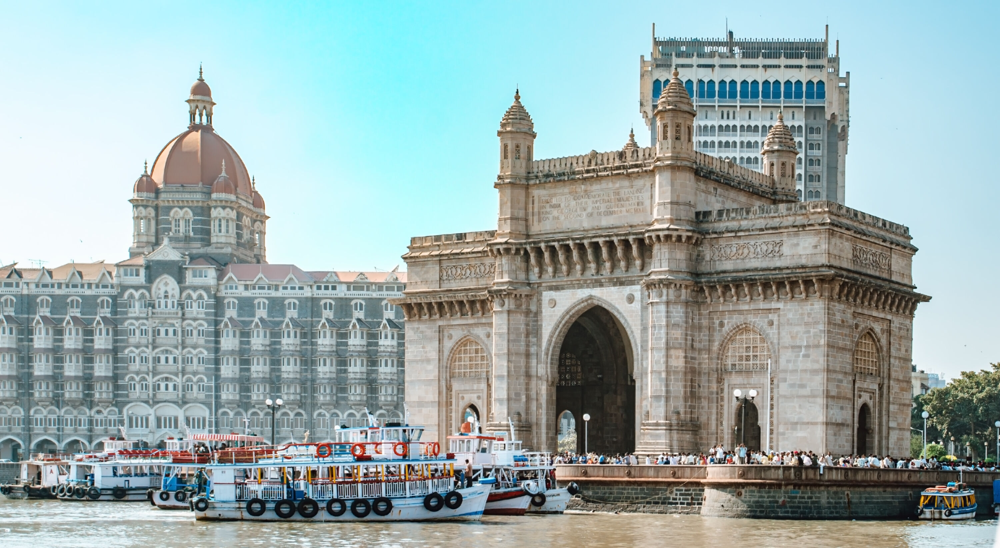
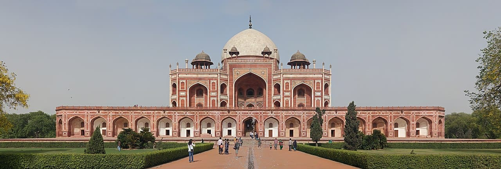
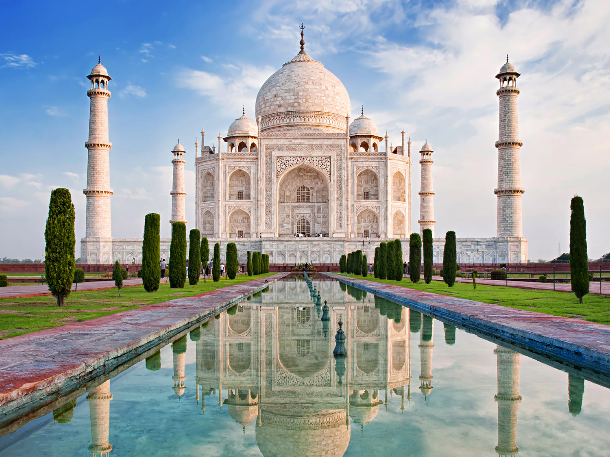
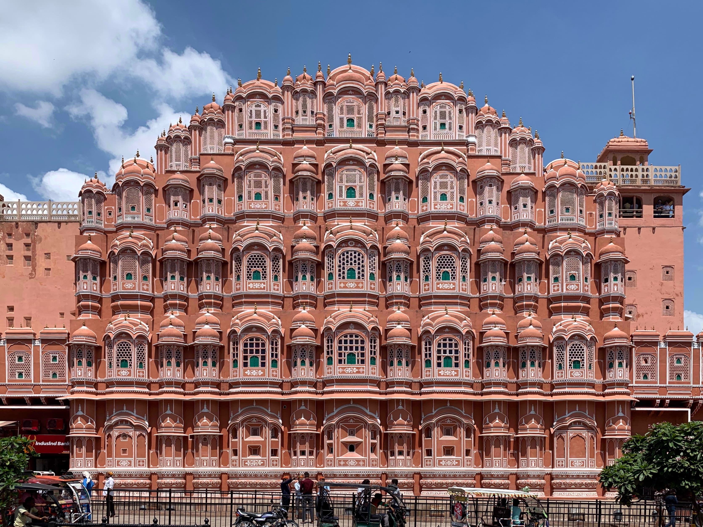
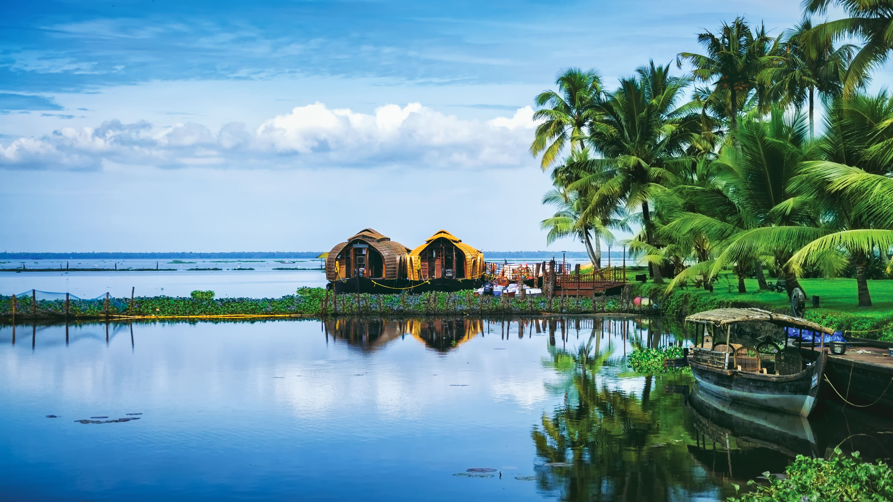

India - Land of Diversity

Introduction
India is one of the world’s oldest civilizations, known for its rich history, cultural diversity, and deep spiritual traditions. With thousands of years of heritage, the country offers visitors a unique blend of ancient architecture, colorful festivals, and modern city life.
From the snow-capped Himalayas in the north to tropical beaches in the south, India’s landscapes are as diverse as its people. Travelers can experience historic monuments, vibrant street markets, peaceful temples, and world-famous cuisine all in one journey.
Quick Facts
- Capital: New Delhi
- Population: Over 1.4 billion
- Language: Hindi, English, and regional languages
- Currency: Indian Rupee (INR)
- Best Time to Visit: October to March
Explore Major Destinations
Jump to a specific destination
\r\n
Delhi

Region: North India
Delhi is the capital city of India and a place where history and modern life exist side by side. The city has served as the seat of several powerful empires, leaving behind impressive monuments and historic landmarks.
Visitors can explore ancient forts, bustling markets, and modern shopping centers all in one day. Delhi is also famous for its diverse food scene, offering flavors from every part of the country.
Must-See Attractions
- India Gate - War memorial and popular public space
- Red Fort - Historic Mughal fortress and UNESCO site
- Qutub Minar - Tallest brick minaret in the world
- Lotus Temple - Famous for its unique flower-shaped design
- Chandni Chowk - One of India’s oldest and busiest markets
Back to top
Agra

Region: Uttar Pradesh
Agra is best known as the home of the Taj Mahal, one of the Seven Wonders of the World. The city played a major role during the Mughal Empire and is filled with historical architecture.
Beyond the Taj Mahal, Agra offers impressive forts, gardens, and monuments that showcase Mughal art and design. It is a must-visit destination for anyone interested in history and culture.
Must-See Attractions
- Taj Mahal - Iconic white marble mausoleum
- Agra Fort - Massive red sandstone fortress
- Mehtab Bagh - Garden with views of the Taj Mahal
- Itmad-ud-Daulah - Elegant marble tomb
- Local Marble Workshops - Traditional craftsmanship
Back to top
Jaipur

Region: Rajasthan
Jaipur, known as the Pink City, is famous for its royal heritage and beautifully preserved palaces and forts. The city reflects the grandeur of Rajasthan’s royal past.
Tourists can explore hilltop forts, colorful bazaars, and historic observatories. Jaipur is also well known for traditional crafts, jewelry, and vibrant cultural performances.
Must-See Attractions
- Amber Fort - Majestic fort overlooking the city
- Hawa Mahal - Palace with hundreds of small windows
- City Palace - Royal residence and museum
- Jantar Mantar - Ancient astronomical observatory
- Johari Bazaar - Market famous for gemstones and jewelry
Back to top
Kerala

Region: South India
Kerala is known for its lush greenery, calm backwaters, and scenic coastline. The state is often called “God’s Own Country” because of its natural beauty and relaxed atmosphere.
Visitors can enjoy houseboat cruises, hill stations, wildlife sanctuaries, and traditional Ayurvedic treatments. Kerala is also famous for its unique cuisine and classical dance forms.
Must-See Attractions
- Alleppey Backwaters - Peaceful houseboat journeys
- Munnar - Tea plantations and cool climate
- Varkala Beach - Cliffs overlooking the Arabian Sea
- Periyar Wildlife Sanctuary - Rich biodiversity
- Kathakali Performances - Traditional dance drama
Back to top
Travel Tips for India
Planning ahead can help make your trip to India comfortable and enjoyable.
- Transport: Trains and domestic flights are affordable and widely available.
- Clothing: Wear modest clothing, especially when visiting religious places.
- Food: Enjoy local cuisine, but choose clean and busy eateries.
- Health: Drink bottled water and stay hydrated.
- Culture: Respect local customs, traditions, and religious practices.
← Back to Asia Home